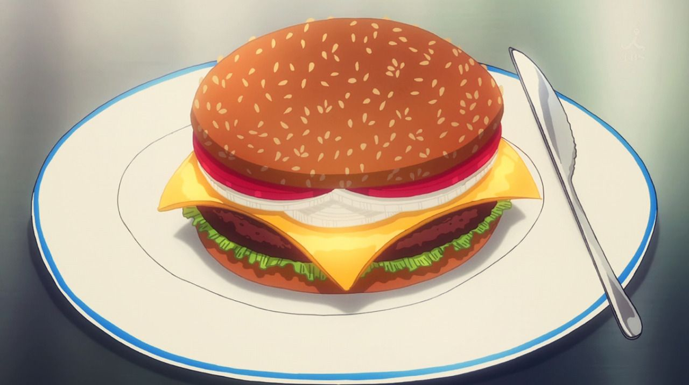

Classic Cheeseburger
Ingredients:
1 pound ground beef (80/20 for best flavor)
Salt and pepper
4 slices of cheddar cheese
4 hamburger buns
Lettuce, tomato, onion, pickles (optional)
Ketchup and mustard (optional)
Instructions:
Preheat your grill or stovetop skillet over medium-high heat.
Divide the ground beef into 4 equal portions and form into patties. Make a small indentation in the center of each patty to prevent them from puffing up while cooking.
Season both sides with salt and pepper.
Grill the patties for about 3-4 minutes on one side. Flip them and add a slice of cheese to each patty. Cook for an additional 3-4 minutes for medium-rare, or until desired doneness.
Toast the hamburger buns on the grill for about 1 minute.
Assemble your burgers with toppings of your choice and serve.
BBQ Bacon Burger
Ingredients:
1 pound ground beef
Salt and pepper
4 slices of bacon
1 cup barbecue sauce
4 hamburger buns
4 slices of pepper jack cheese
Fried onion strings (optional)
Instructions:
Cook the bacon in a skillet until crispy. Remove and drain on paper towels.
Preheat the grill or skillet over medium-high heat. Form the ground beef into 4 patties, season with salt and pepper.
Grill the patties for 3-4 minutes on one side. Flip and brush with barbecue sauce, then top with cheese. Cook for an additional 3-4 minutes.
Toast the buns and assemble with a burger patty, bacon, more barbecue sauce, and fried onion strings if desired.